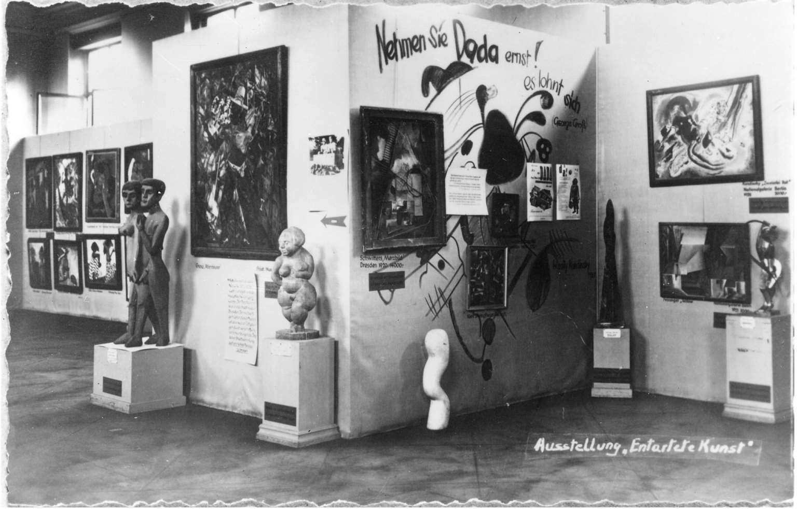
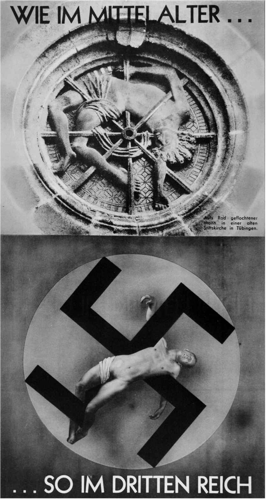
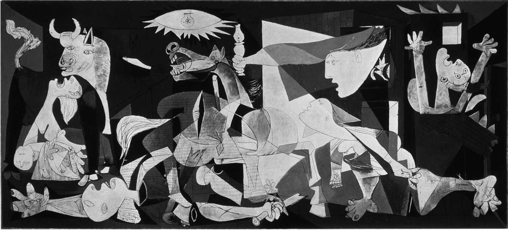

列昂·托洛茨基，《文学与革命》（1923）
阿道夫·希特勒，“伟大的德国艺术”展览
开幕式上的讲话，1937年于慕尼黑
个体与集体
安德烈·布勒东试图在超现实主义运动的成员中注入一种共产主义纪律，哪怕这意味着要接受政党的路线。1926年初，他和路易·阿拉贡 [194] 及保尔·艾吕雅一起加入了共产党，到1926年11月，菲利普·苏波 [195] 和安托南·阿尔托 [196] 就因违反纪律而被开除出超现实主义运动。1929年，布勒东和阿拉贡发表了一封致名超现实主义者与潜在同情者的联名信，询问他们是否愿意参加集体活动。根据回复，阿尔托被再次开除，同时被开除的还有乔治·巴塔耶 [197] （他说“理想主义混蛋太多了”）和罗贝尔·德斯诺斯（“所有的文学和艺术活动都是浪费时间”）；罗歇·维特拉克 [198] 和雅克·巴龙 [199] 则同属留下的56个受邀者之列。新的政治事态在同年发表的《超现实主义第二宣言》（Second Manifesto of Surrealism ）中正式规范下来，这导致了通过发表宣言来表达的原则分歧和谴责以及派系的变化，情况极其复杂。
这样一来，本书第三章中讨论的那种英雄主观主义象征论就受到了极大压力，不仅是在超现实主义运动内部如此，在大众中间也是一样。恰在这时，我们开始看到关于现代主义时期英雄类型的竞争激烈的主张。一种要求“现实主义”和“客观性”的集体政治心理受到拥护，战胜了超现实主义者以及现代主义全盛时期的大多数其他作家和艺术家那种个性化、审美化倾向的个人主义。这一冲突带来了恐怖的后果——例如，莫斯科公审 [200] 就表明，从某种结局预先确定的革命史角度来看，人类个体的行为是如何被“客观地”认定为资产阶级反革命集团的行为，完全独立于他们作为个人可能会有的任何自觉意图。
阿瑟·库斯勒 [201] 的小说《中午的黑暗》（Darkness at Noon， 1940）的情节是以在苏维埃监狱里等待死亡的布尔什维克鲁巴肖夫的受审和私下的想法为中心展开的。他知道“党是历史上革命思想的化身。历史不知有什么顾忌和犹豫”。 [202] 他后来在日记里写道：
与这相比，法国超现实主义者被开除就显得微不足道了。但这里涉及一个关乎现代主义艺术家与大众文化之间关系的一般性问题，这个问题非常重要。
我一直都认为实验艺术倾向于推动增进认知这一终极现实主义目标，但在格奥尔格·卢卡奇这样一位马克思主义批评家，以及温德姆·刘易斯这样一位反柏格森哲学的人［在其《时间与西方人》（Time and Western Man， 1927）中的确如此］看来，这实在是缘木求鱼。1930年代末期，卢卡奇思考着卡夫卡的文学，提出现代主义者把社会现实变成了噩梦，充满忧虑又荒谬无比，从而让我们彻底丧失了洞察力。他声称，文学必须批判性地利用资产阶级遗产，因此对于何为“正常”必须有一个明确的社会–人文概念，据他所言，这恰是现代主义所谴责的东西。在他看来，现代主义未能创造出可信而持久的“类型”，却美化了反人文主义和变态行为。他为19世纪现实主义辩护，说现代主义者破坏了——因此而偏爱马克西姆·高尔基、托马斯与海因里希·曼，以及罗曼·罗兰等作家，因为对艺术模式的检验应该是政治——在马克思主义者卢卡奇看来当属“进步”的趋势：“当今文学的进步趋势是什么？现实主义命悬一线。”
卢卡奇在此提前进行了后代的“西方马克思主义者”提出的对意识的解构主义分析，但事实上真正重要的，不仅仅是他在这里没有这样看到一个事实：《尤利西斯》中唯一真正的超现实主义章节（“喀耳刻”）很滑稽、使用的是一种虚假的精神分析方式，且对主要主人公都持高度批评的态度。重要的是这里暗含的对（像本书这样的）独立批评话语的不屑一顾，而青睐集体评判（事实上通常是由“党”来阐明的），因为“广大群众……从先锋文学中学习不到任何东西，因为它对现实的看法如此主观、混乱和丑陋”。作为一种获得认可的传统技巧，对现实主义的这种“学习”是必需的，与社会的“正确”联系也是必需的：
埃里克·考夫曼 [205] 把现代主义的崛起定义为“文化个人主义的伟大世俗运动，扫清了1880年以来的高雅艺术和文化，并渗透到社会各个阶层，从而在1960年代解放了人们的观念”。如我们所见，事实大致如此；不过在现代主义实验先锋派内部，也有些艺术家倾向于相反的集体主义方向（如在早期的一体主义运动中，以及未来主义的某些原始法西斯主义的方面）。但当我们在1930年代进入政治紧张期后，所有艺术家都面临着日益严峻的两难困境：应该选择内省、个人的坚持己见和表达，还是选择集体主张。尤其有趣的是，某些人试图在实验性的个人主义传统与其所支持的集体政治行动之间进行调和。例如，戴——刘易斯认为，诗人“敏锐地意识到个体在当前的孤立状态，意识到有必要建立一个可以恢复交流的社会有机体”，而乔治·奥威尔则在回顾过去时认为，此事的某些解决之道毫无价值：
权力崇拜
对于这一时期的很多现代主义者来说，他们对团体忠诚的追寻是虚假的——那种追随并非因为渴望与任何具体的社会打成一片，而是因为渴望与某个能够解决其问题的英雄式领袖结为一体。塞西尔·戴——刘易斯也看到了这一点：
崇拜“真正强大”的个体，将其作为集体责任的践行者，与法西斯主义的权力崇拜倾向是一致的；D. H. 劳伦斯在其小说《羽蛇》（The Plumed Serpent ，1927）中以多种方式欣然接受了这一点，而他的朋友奥尔德斯·赫胥黎则在《旋律的配合》（Point Counter Point， 1929）中对其讥讽了一番。
寻找强力领袖倒不怎么吸引贝托尔特·布莱希特，1941年，他在美国写了一出戏，把希特勒写成了一个芝加哥流氓，扼要再现了《三便士歌剧》。他不是唯一一个曾直面个体与社会间的紧张状态、经历了他本人鼓吹向政治权威低头的时期、后来又把政治以大致实验性和现代主义的方式呈现在观众面前（我们在第一章讨论1929年的《三便士歌剧》时看到了这种苗头）的政治作家。在写于1929-1932年魏玛共和国危机时期的那些戏剧中，他发展出一种剧院形式（Lehrstucke， 即学习剧），鼓励工人阶级在自己的演出中交替变换社会角色和战术位置来探索至关重要的政治问题。这些是专门由无产阶级观众设计并为其演出的，为的是让他们远离“资产阶级”说教和唯心思想的影响。
《应声虫》（Der Jasager ）的文本是由伊丽莎白·奥普特曼 [206] 与布莱希特和魏尔一起由一出能剧（亚瑟·伟利 [207] 将其译为Taniko ）改编为“学校歌剧”的。四个年轻人在一次危险的爬山旅行时，最小的孩子生病了。他们该转身回去吗？生病的男孩承认大家应该继续爬山——于是其他三人闭上了眼睛（以便“谁也不比他人更感愧疚”），把他扔下山摔死了。罗斯 [208] 评论说，“政治或许可以与希特勒的信条截然相反，但人群中还会有同样的造神运动，同样无视生命的神圣”，特别是在该作品的寓意中：“最重要的是学会顺从。”在柏林和别处的学校，这出戏上演了数百次。
布莱希特同样写于1930年、由艾斯勒 [209] 作曲的《措施》（Die Maßnahme ）是另一部示范性的寓言剧，直接描写了拥护政治原则与（言论自由的）道德权利之间的冲突。它还清晰阐明了为个体辩护的文化与由某个政党所赋予的集体身份之间的区别，是这方面的一个重要文本。它以惊人的清晰思路提出的问题超越了早期表现主义戏剧的蒙昧主义心理和超现实主义者诉诸内心的转变（布莱希特没有时间关心这些），尽管他本人有一出戏，即《巴尔》（Baal ），写的就是一个表现主义诗人。在《措施》里，年轻的中国共产党地下工作者中有一位青年同志因为同情受压迫者而泄露了他们的任务。他得知自己必须死，认了命，甚至还为此作了计划。“你们一定要把我扔到石灰窑里去……为了共产主义，它与全世界无产阶级大众的进步是一致的。”汉斯·艾斯勒谱写了巴赫式众赞歌来强化这出戏的恐怖结论：“个人只是整体的一部分。”
希特勒在慕尼黑：纳粹与艺术
在欧洲，纳粹攻击现代主义艺术是“堕落”的，让我们直接看到了实际的政治主张与现代主义艺术宝藏之间的对抗关系。虽然攻击的具体内容主要影响了战前时期的德国，但其所采取的方式却很典型，极权政治即将利用这种方式非常成功地让艺术摆脱主观性和实验性，转而成为表达集体意志的工具。（在苏联的例子中，他们要求艺术摆脱“资产阶级个人主义”和“形式主义”，采取“社会主义写实主义”。）
1937年7月19日，在慕尼黑举办了一场名为“堕落艺术”（Entartete: Kunst ）的官方展览，随后在德国各地巡展（部分展品见图12）。正如彼得·亚当 [210] 所指出的：

图12 图中背景里“堕落的”抽象画是康定斯基的《黑点》（见图4），他的另一幅画作位于右上角
很多纳粹据为己有的“堕落”作品被他们拍卖了，而在被掠夺的其他作品中，有1004幅油画，以及3825幅水彩、素描和平面作品后来于1939年3月20日在柏林消防局的院子里被付之一炬。
希特勒在展览开幕式上的讲话颇值得密切关注。他非常清晰地表达了他希望清除的现代主义的方方面面。首先，现代主义意在吸引错误的（世界主义）群体。我强调过的欧洲主义引发了“一种国际共有的经验，从而完全抹杀了关于其与某个民族之间不可分割的关系的任何理解”。其次，它的实验主义不过是“焦躁不安”：“今天是印象主义，明天又是未来主义、立体主义，甚至还可能是达达主义，没完没了。”而对此（也就是其思想的传播）的批评回应也是希特勒清剿的对象，因为“最疯狂最空虚的怪物”启发了“连篇累牍的口号给它们贴上标签”。政府应通过定义真实的本质来稳住局势，也就是说，应该要求在“德国艺术”中采纳从民族主义和种族角度上定义的“现实主义”，它“具有永恒的价值，就像一个民族所有的真正有创造性的价值一样”。现代派主观主义的主张，以及它的诸如“内在体验”“强大的精神状态”“坚强意志”“孕育着未来的情感”“英勇的态度”“意味深长的共情”“经历了时代的洗礼”“独创的质朴风格”等“口号”都必须摒弃：“这些愚蠢、虚假的借口，这类噱头或胡言乱语一律不得再说。”布拉克、马蒂斯、康定斯基、基希纳、马克等艺术家也不再被接纳。的确，所有伟大的德国表现主义艺术家都被裁定为堕落的狂人，因为他们通过扭曲人形，“把我国当前的全体人民看作真正卑劣的呆小病患者”。更有甚者，他们“看草地是蓝色的，天空是绿色的，云是硫黄色，诸如此类，或者按照他们自己的说法，他们的体验就是这样”。这与罗杰·弗莱的评价大相径庭。希特勒用来威胁执行他的命令的委婉动词邪恶得骇人听闻：“以德国人民的名义，我要禁止这些可怜的不幸之人，他们显然深受眼疾之苦。”因此，“德意志内政部”必须“讨论这种可怕眼疾的进一步恶化（Verderbung ）是否至少应该受到遏止（unterbinden ）”，以此作为“对我们文化中最后一丝腐败物发起一场无情的净化战争（einen unerbittlichen Sauberungskrieg ）”的一部分。他承诺：“从现在开始……所有那些彼此支持从而苟延至今的胡言乱语、半吊子艺术家和坏蛋集团，都会被取消和废除（ausgehoben und beiseitigt ）。”
1937-1944年间，还举办了与之抗衡的八场“伟大的德国艺术”展览。在那些作品中：
这引发了最媚俗的那种古典风格的复兴。一位科隆的批评家如此描述展览的基本主题结构：“主题就是工农兵……英雄主题压倒了感伤的主题。伟大战争的经历、德国的山河、工作中的德国男人、农村生活。”
纳粹在这里起到了示范作用，但要论以明确的反个人主义和反自由的姿态打破政治和私人的界线，他们可不是独一无二。
布莱希特要求的批判的反思方法（无论它由于诉诸马克思主义和党纪可能会得到多少支持）仍是出自现代主义的意愿，希望把日常现实变形、寓言化和神话化（正如他后来的作品所表现的那样），因此如果对含混和冲突给予一定程度的容忍，通过解读其隐喻，我们就能确定作品与现实还是相似的。前文讨论的大多数作品也大致如此。这与1930年代法西斯党强加于艺术之上的“真实生活”的要求大相径庭，后者旨在（通过使用最无趣、老套且一目了然的摄影技巧，这一切其实在各种意义上都是虚幻的）以只要你有“正确的信仰”，艺术就可以反映现实观点这一主张来简化这一反思过程。因此就有了如于尔根·韦格纳 [211] 的《德国青年》（German Youth ）那样的作品中出现的摄影古典主义和可怕的作态。在该作品中，作为德国母性象征的“美惠三女神”带着年幼的孩子出现在画面左侧，中间是一些童子军式的少年带着鼓和号在纳粹旗帜下歌唱，右边则是三个奇幻的斯巴达裸体青年，两人持矛，一人持飞机模型；在里夏德·施皮茨 [212] 的《纳粹的崇高愿景》（Nazi Vision of Greatness ）中，挤满田野的士兵望向太阳，在他们上方的天空中，一群天国的阵亡将士的幽灵飘向空中的一座城堡，很像《绿野仙踪》里的那座，背后升起一个闪闪发光的巨型纳粹卐字章；或是在赫尔曼·奥托·霍耶 [213] 的一幅画中，正在演讲的希特勒站在一间黑暗房间的讲台上：一小群听众的脸被照亮了，而标题则是《太初有道》（In the Beginning Was the Word ）。
法西斯和苏联现实主义的技巧通过使用一种看似可靠的技巧，来推行一种被荒唐地理想化的、往往具有伪宗教特征的好莱坞式的白日梦；它一直企图鼓舞人心，诉诸流行的、大众艺术的集体主义观念。的确，这种文化管理始终都在攻击的，恰恰是对个人评价的依赖：
这种“集体思想”里没有批评式辩论的立足之地，就像戈培尔在1937年宣称的那样：“艺术批评的废除……与我们的文化生活中以目标为导向的清洗和协调直接相关。”在纳粹看来，应该将现代主义视为一种丑陋的个人主义而废弃，转而采纳他们的现代版本。以和政客们自己的态度一样卑劣粗俗、多愁善感、白日做梦的方式忠实地反映政客们眼中的“新现实”，已经成为德国艺术家的任务。因此，保罗·费希特尔 [214] 攻击托马斯·曼说：
进步与“批评”
如前所述，绝大部分现代主义艺术都有着自由化和个人主义倾向。很多后来的现代主义评论家都曾试图指出为何在他们看来，现代主义艺术的一个核心传统日益成为大致偏左翼的社会批评的一部分。或许现代主义内部有两个传统。其一以先锋派为中心，其所理解的“进步”具有黑格尔马克思主义的内涵，即认为历史是朝着社会解放的方向发展进步的（哲学、理论或相关专门术语的入门者即可对其“本质”一目了然）。遵循这一乌托邦传统的艺术家往往会像那些希望清理日常语言、令其更有逻辑、更“科学化”的哲学家一样（比如荷兰风格派运动、包豪斯，以及某些心境下的勋伯格）。其他艺术家则认为不同的艺术语言本来就是社会性的，甚至是一场游戏。他们在艺术群体内外都意识到了竞争的存在——甚至在某种程度上还意识到了与特定制度有关的权力话语的竞争。（这一点尤其适用于那些对妇女解放感兴趣的人。）对这第二个群体而言，革新和进步与各种制度多少并不均衡的历史发展有很大的关系，这些制度涉及包括先锋杂志在内的出版、包括与先锋派团体合作在内的其他类型的批评曝光、新闻观察，及其各自的对抗与合作。无论他们对特定的先锋派团体有多忠诚，他们的背景假设都会围绕着一种制度多元主义展开，这让他们得以在一个意见的辩论空间里茁壮成长，从而拥有最大的求得真理的机会。另一方面，对于极左和极右两派来说，其口号则是忠于信仰意义上的“继续批评”，直至获得压倒性优势；不要落入不事批评的泥潭，与新的社会规范沆瀣一气，也不要在作品的独立性乃至人的自主性这类重大问题上太过容忍。但对于自由主义的中立派来说，有挑战性的全新艺术思想和作品所引起的批评性辩论才是最重要的。
这就是说，在政治中心的周围有无政府主义的、激进的，以及崇尚传统的团体，共同构建了一种宽容的现代主义。以达达主义运动为例，它在早期的示威活动中拒绝任何有组织的意识形态，对自身运作其间的社会制度提出质疑。在很多人看来，这使得达达主义成为激进先锋派的典范，引领着一场“对艺术的反抗”，抨击“艺术体现一种文化的愿景并证明其合理这样一种不加批评的假设”。另一方面，自由资产阶级传统倾向于认为文化的精华等同于艺术的精华，其中包括过去的艺术，历久弥新且始终与当下息息相关（前文论述过这种传统主义者和引经据典的现代主义者的方法）。
如果我们试图理解整个现代主义运动，而不是有选择性地辨别其中的左翼、自由派和右翼倾向并为之辩解的话，这里有待解决的问题恰是先锋的性质。我同意黛安娜·克兰 [215] 的看法，即近乎所有的先锋艺术，不管左倾还是右倾，在思想上都是先进的，技巧也是创新或实验性的，也都是由“全心致力于打破偶像的审美价值观，拒绝流行文化和中产阶级生活方式”的艺术家创作的。先锋艺术因而成为高雅文化之宏大使命的有机组成部分，并以技巧和审美问题的解决为中心（这与流行文化形成了鲜明对照，后者的方法更加公式化）。我在前文中试图说明，这些解决方案可以让艺术家和受众获得颇有价值的认知收益。因此，在克兰看来，如果一场运动重新定义了审美规范，运用了新的艺术工具和技巧，并重新定义了艺术客体的性质，那么它就是审美意义上的先锋艺术。而在政治意义上，如果它所体现的批判性社会和政治价值观不同于主流文化，重新定义了高雅和流行文化的关系，并对艺术制度采取一种批评的态度［例如，达达主义属于左翼，而艾略特的《标准》（Criterion ）杂志属于右翼］，那么它就是先锋艺术（也就是说，他看待社会内容的方法是前卫的）。左右两翼的现代主义者都有可能符合这些标准。（就右翼而言，当资本主义的技术发展能够与某个现代化过程相结合时，就出现了包豪斯建筑，这很有代表性）。
很多左翼现代主义评论家认为，他们的倾向是“进步”的（是左翼历史发展观的一部分），而右翼的转向充其量不过是怀旧而已，这倒在意料之中。但是关于先锋艺术，无论左翼还是右翼，不妨问问它们究竟是从某种明确的现代主义意义上来说是进步的，还是只是用当代艺术手段对由来已久（实际上自19世纪以来便是如此）的政治冲突进行了历史延续。有没有什么现代主义的固有特征可以通过这样一种政治分析揭示出来？
现代主义——或者任何艺术时期都是如此——运动的模式非常重视创新和技巧变化，但它们实际上是否体现了道德或政治进步仍然成疑。他们是否引领了整个世代朝着某个特定的方向前进？这几乎永远是一厢情愿的想法。有很多迥异的先锋派运动都非常成功且经久不衰。但任何涵盖整个现代主义的“线性模式”从根本上来说都是一元论，且都是意识形态主导的（例如，第二章提到的阿多诺对斯特拉文斯基的攻击就揭示了这一点）。的确，精英主义或运动主导的进步观念在当时可能误导了很多人，因为我们如今可以把这个时期看作一个整体了——我们看到，当时起主导作用的事实上是一种折衷的多元论和对话。
例如，在音乐领域，我们看到施特劳斯和马勒可算是浪漫主义和自我表达一派；斯特拉文斯基属“客观”一派，并转向新古典主义；而勋伯格则从一派走向了另一派。所有这三种可能性都同时存在，此外还有像查尔斯·艾夫斯 [216] 、埃德加德·瓦雷兹 [217] 和约翰·凯奇 [218] 等创新现代主义者采取的是远为折衷的方法。
因此，依赖某种神秘的辩证法，认为勋伯格学派；或荷兰风格派运动的神秘主义启示；或叶芝式的神智学和神话；甚或形式特质的发展，如在克莱门特·格林伯格 [219] 看来界定着所有真正的现代绘画属性特征的“平面性”；或者包豪斯学派所鼓吹的“科学地”推动艺术与技术的联姻——认为其中任何一派独力承担着艺术界“历史进步的重任”，无一例外全都是毫无逻辑且违背经验的。
现在请在头脑中试图决定，乔伊斯、伍尔夫、劳伦斯，或毕加索、康定斯基、恩斯特、蒙德里安，这些人中哪一个更“进步”，理由是什么——更不用说对威尔斯、萧伯纳、布莱希特等人提出同样的问题了，因为这些人曾真正致力于左翼政治干预，因而就他们而言这个问题应该更容易回答一些。真实情况往往是，我们想出一个公认的进步路线，比如女性解放的进步路线，这样一来，度量就清晰多了。这条路线把易卜生远远地置于萧伯纳之前；而乔伊斯虽然有些易卜生式的观念，却处在模棱两可的位置；艾略特、刘易斯和庞德，以及大多数未来主义者都无处安身；而弗吉尼亚·伍尔夫作为一个极具颠覆性且有着清醒的文化意识的女性主义者——特别是在《幕间》（1941）中——大约应该位于这条线的“右”侧。
这种道德和政治的排序，尽管其本身可能颇具价值，却对我们理解现代主义艺术运动的发展史无甚用处。就像关于女性解放的浩瀚文献所显示的那样，真正关心女性解放，就必须仔细研读各种各样的制度和社会团体，研究女性作家和她们彼此间的关系，如此等等。
从当今视角，我们可以看到截然不同的模式引发了不同种类的长期、广泛的文化意义，这使得重要的现代主义艺术家的作品获得了其经典地位。这里的重要变化不仅存在于“高雅”文化内部。正如德里克·斯科特 [220] 提醒我们的，“根据社会意义来衡量，12小节布鲁斯对20世纪的音乐远比12音列重要得多”。后者或许看来更“进步”，但只有在整个音乐的形式规范中才是如此。社会和审美衡量标准始终相互影响，在大型艺术活动发生的时期则有可能变得难以捉摸。
在审美上集中关注技巧的发展（及其频繁导致的必然结果，即追求最大限度地体系化、统一化的作品，如1960年代那样）自是问题重重，往往会让我们认为，一个艺术团体独自便可立于真正或“必要”的进步路线上。例如，歌剧《特里斯坦与伊索尔德》《厄勒克特拉》和《期待》之间就明显有一种技巧上的渐进联系，即半音体系的发展，但作为艺术作品，他们真正的相似之处无疑来自更为广泛传播的思想：关于新近开放的，或者非理性地表现女性及其性欲的思想。正如我在前文所指出的，最终对进步观念有价值的是技巧变化背后的思想，以及它们对受众心理产生的多少算是可取的影响，这些思想在艺术内外都可以找到，也并不全都带有明显的政治色彩。
因此在“立体主义之后”，人物肖像画不再是神圣不可侵犯的——它可以变成嵯峨的风景画——在达达主义和《期待》之后，在从贝尔格的《伍采克》到马克斯韦尔·戴维斯 [221] 的《疯王之歌》（Songs for a Mad King ）等作品中，一种非理性的联想本身成了理解人性的手段。正如很多批评家所指出的，这里有很多不同的线索和谱系需要研究。音乐界曾发生过重大的技巧变化，例如单是1912年，德彪西的《游戏》（Jeux ）就摆脱了主题主义，勋伯格的《月光小丑》摆脱了不协和音，斯特拉文斯基的《春之祭》则具有革命性的韵律和节奏；这些变化可以并的确率先开始了各个方向的尝试，那些方向不全是无调性的，并无一属于任何具体的先锋团体。这三种创新都具有解放的意义，对所有派别的作曲家都提出了新的问题，也都可以在各种思想的代表性框架中使用，唯其如此，举例来说，卡罗尔·席曼诺夫斯基 [222] 《罗杰王》（King Roger ）的神秘象征主义曲折、贝拉·巴托克 [223] 《神奇的满洲大人》（Miraculous Mandarin ）的都市野蛮，乃至威廉·沃尔顿 [224] 《门面》中的合奏喜剧，才有可能被呈现在我们面前。
或许我们最好认为现代主义技巧能够面对各种方向，虽然它们曾为自己青睐的示威运动发表过进步主张——例如魏玛时期政治拼贴画的发展，或是布莱希特式的疏离效果。因为历久弥新的现代主义艺术的确几乎一贯致力于对读者、听众或观者的思想产生不同的政治或社会（或宗教）影响。因此才有了多萝西·理查森和弗吉尼亚·伍尔夫的女性主义，叶芝和乔伊斯的民族主义，奥登及其伙伴们以及格奥尔格·格罗斯 [225] 、约翰·哈特菲尔德 [226] （赫尔穆特·赫茨菲尔德）和奥托·迪克斯 [227] 的社会分析，奥登、艾略特和斯特拉文斯基为基督教所作的辩护，格罗皮乌斯 [228] 和勒·科布西耶 [229] 提出的建筑与社会间的关系，恩斯特和阿拉贡的反讽和非理性主义批评，纪德、乔伊斯、劳伦斯和布勒东所追求的性解放，更不用提《摩登时代》（Modern Times ）、《大都会》（Metropolis ）、《战舰波将金号》（The Battleship Potemkin ）等电影的大众社会批判了。考虑到20世纪初期欧洲社会的一般假设，大多数的这类艺术，就其将占据优势的保守政治意识形态与并非强制性却至关重要的文化模式进行对比这一点而言，在创作意图上大体属于自由派或左翼。
从其与当前社会的政治冲突发生互动来看，所有的现代主义作品在某种程度上都涉及政治运动。这在格奥尔格·格罗斯及其以照片拼贴创作的同行赫茨菲尔德兄弟身上尤其明显（见图13）。格罗斯作为达达主义者的早期作品有很多未来主义和立体主义几何学的表达，但在后来的艺术生涯中，他把这个特点提炼成一种远为具象派的卡通模式，认为自己是在应对“在立方体和哥特风格中寻找意义的所谓神圣艺术的那股子云里雾里的趋势”，也就是表现主义。这提醒我们，在所有历史时期都存在着一个现实主义艺术传统，道德观念会强有力地激发起这一传统：就格罗斯的例子而言，他的很多画作和素描作品都集中显现出这一点——特别是他的《统治阶级的面孔》（Gesicht der Herrschende Klasse ，1921）和《瞧！这个人》（Ecce Homo ，1923），或许这两部也是他最有名的著作。他不仅关注工人的背叛和痛苦，还思考了被看作好色之徒、性谋杀者和娼妓的统治阶级的私人生活。这是一种喀耳刻式的丑陋而残忍的政治和性别观。它象征着当有权有势者把他人当作区区物体时，出现在资本主义社会内部的人性丧失。

图13 约翰·哈特菲尔德，《就像在中世纪……也像在第三帝国》（Wie im Mittelalter... so im Dritten Reich ，1934）。隐喻的合成照片比较了两种文化；以及纳粹对于现代的背叛
格罗斯显然对一种政治类文化诊断的生成做出了重要贡献。他的画作《社会栋梁》（Pillars of Society ，1926）为右翼暴力和军国主义画像，对纳粹有着预言的态度。正如卡尔·爱因斯坦早在1923年便曾说过的：
无论他多么时髦，格罗斯依靠的始终是漫画家对现实主义的妥协（毕加索也是如此）。但是，一幅运用了某种高级的后立体主义技巧，依赖多层次的历史、神话和艺术典故，全然现代主义的作品，其政治意义又会如何呢？很多现代主义杰作都把形式实验与哲学或政治意义结合在一起：例如艾略特的《四首四重奏》就有着完美的自成一体的语言结构，同时还对英国圣公会的神学进行了深刻分析。当然，形式主义和美学自主性（或许它看似不过是指向个人乐趣）以及政治承诺可以彼此对立，但在很多现代主义者的例子中，它们也会相互合作（特别是在《伍采克》中）。
《格尔尼卡》（1937）
我在本文开头举了一些例子，也乐于以一个例子来结束全篇，这个例子与任何其他作品一样具有重要的政治意义。毕加索的《格尔尼卡》（图14）将政治模仿（表现了第一波针对平民的一场空袭的恐怖效果以及随之而来的道德义愤）与引经据典的、神话的、形式扭曲的现代主义技巧的大量运用结合起来。作为对战争和恐怖主义的研究，它的政治影响相当深远，从它在1937年前后的首次展出，一直到现在，它还以壁毯的形式挂在联合国的一个大厅里（科林·鲍威尔在这幅作品面前宣布入侵伊拉克时，它被罩上了）。它的影响补充、延展了构建史实的现实主义，并赋予其人性的深度。当巴黎世博会的西班牙展馆首次展出这幅作品时，这种鲜明的反差便一目了然，“每一个访客进馆时迎面看到的是冈萨雷斯 [231] 的社会主义现实主义雕塑《蒙特塞拉特》（Montserrat ），那是以一个女农民为主题的一座铁像，她手持镰刀盾牌，坚定不移地伫立在每一位来客面前”，楼上是大火中的格尔尼卡的照片，旁边的墙板上写着保尔·艾吕雅的诗《格尔尼卡的胜利》（“La Victoire de Guernica ”）。摄影和社会主义现实主义作品与巨大的现代主义壁画交相辉映，而不是彼此拮抗；它们只有陈列在一起，才会引发反思式的响应。

图14 巴勃罗·毕加索，《格尔尼卡》（1937）。对平民的狂轰滥炸——高深莫测、意义深远，既是一幅用典复杂的杰作，又是一个可怕的预言
我们在考察这幅画的现代主义方面时，会看到一种复活的新古典主义——在一幅形似雕带的作品中“将静态平衡与骚动相结合”，而“对宏伟的大卫式战争场面雕刻般的精准笔法”出现在“冲突的庄严展示中，表现出大卫传统的强烈回流”。但我同意蒂姆·希尔顿 [232] 的看法，他同样认为《格尔尼卡》是以模糊的图像画法创作的“一幅意义不明的画作”——例如，没有人真正了解公牛象征着什么，而这些不确定因素会影响对这幅作品的政治影响的任何评价。
1937年10月，当时支持斯大林社会现实主义的安东尼·布朗特 [233] 搬出了公有制社会的论调：他认为毕加索的神秘意象实际上只为取悦“一个唯美主义小圈子”。这就提出了一个问题：像这样的现代主义艺术在政治舞台上作为反对派的艺术能有多大的效果？显然，《格尔尼卡》在当时的反抗效果大概弱于，或者至少在地位上次于，那些与新闻记者的目击证言一起构成关于暴行的历史和客观事实的照片。但作为一幅艺术作品，它的“效果”也本该远远超过政治干预的有效期，因此，布朗特及其同类人的问题在于：他们究竟是否想要那种历久弥新的艺术？
答案是，《格尔尼卡》不是也不该只是那一局部论争的一部分。它在联合国也没有明确偏袒哪一方，无论站在它面前的是谁。我们必须决定如今该如何看待它对军事或恐怖主义袭击平民的道德义愤（诚然如此，无论其是否适用于伊拉克）。报纸和电视上还有很多近期的照片和报道帮助我们做出决定。抑或它“不过”是一幅和平主义者的绘画而已，即便它抗议又只能听任这种不公及其背后的军事化神话不可避免地延续下去，很多现代主义者（尤其是尼采和叶芝）都认为，这样的历史必然会一再重演。
但如此使用神话有何作用？马克斯·拉斐尔 [234] 在《格尔尼卡》声名正隆时撰文指出，神话的象征主义过于模棱两可——例如，公牛可以被看作雄性的生命力、重生的象征，甚或法西斯主义无情的施虐倾向，而马则可以指失败了的法西斯，或是指战败牺牲的人民。拉斐尔重复了布朗特的论调，认为这幅作品的寓意并非“不言自明”，它抑制而不是激发了“创造性的行动”。这幅画太个性化，充满了“内在的痴迷”（就像它是达利画的一样！），因此“未能尊重真实世界里的真实行动”。这里的“真实”行动看起来很像党的行动，而我们没有多少理由认为党的行动就要比其他类型的行动有着更鲜明的“真实”主张。克里斯托弗·格林 [235] 提出了一套不同的现代主义思考，提醒我们说，精神分析认为神话具有普遍性；因此，这幅作品中显然平淡乏味的象征主义便通过用典而获得了一种复杂的普遍性，从而全然不同于个人化或痴迷的效果。悲伤的女人们让人想起基督教的耶稣受难图，公牛令人想起弥诺陶洛斯 [236] ，而马则令人联想到斗牛场上献祭的西班牙神话。这样的联想确实无远弗届。因此我们又回到了我在开篇引用《尤利西斯》中的那句话所提出的思考上来，《尤利西斯》也是一部神话的、新古典主义和具有普遍性的作品，且无疑和《格尔尼卡》一样颇具实验性。
毕加索的画作是现代主义与现实主义艺术，以及与可能被强加于实验性作品之上的政治要求发生的边界冲突的绝佳范例。这很明显取决于——的确，总是过于明显地取决于——当时的政治。对照片（更不用说媒体报道）做出“明确的”政治解读有助于让《格尔尼卡》成为迫在眼前的问题。但从长远来看，人们或许会更加深切持久地对艺术，特别是现代主义，铭感于心，因为它们通过运用神话和象征看到了不同的神学和政治框架，从而创造了新古典主义和普遍化的一般模式，不间断地提出人性道德和政治要求，且乐于把各种文化融合在一处。在此过程中，它们便可揭示人类行为中的一些深奥的、同时又是彼此冲突和富有挑战的东西。这就是《格尔尼卡》这幅画成为杰作而长存于世的原因。对我们来说，重要的是现代主义伟大作品中那股子惊人的强大生命力，以及它们与全然不同的政治语境（以及世界——在那个世界中，拉斐尔的马克思主义远没有那么重要）的持续关联。
但人们很可能会问，政治和文化究竟哪一个是载体，哪一个是内容？我相信任何一个民族的文化，更不用说曾赋予大多数现代主义者以灵感的共同欧洲文化（包括其偏爱的历史叙事），应该始终被看作其政治的载体（我们必须始终希望政治在表现最糟糕之时，能被挫败），而不是相反。正是现代主义广泛而包容的文化同情，才使得它对当今的文化和冲突如此重要，我们面临着本世纪的挑战，却绝不能忘记上一个世纪的历史教训或艺术智慧。